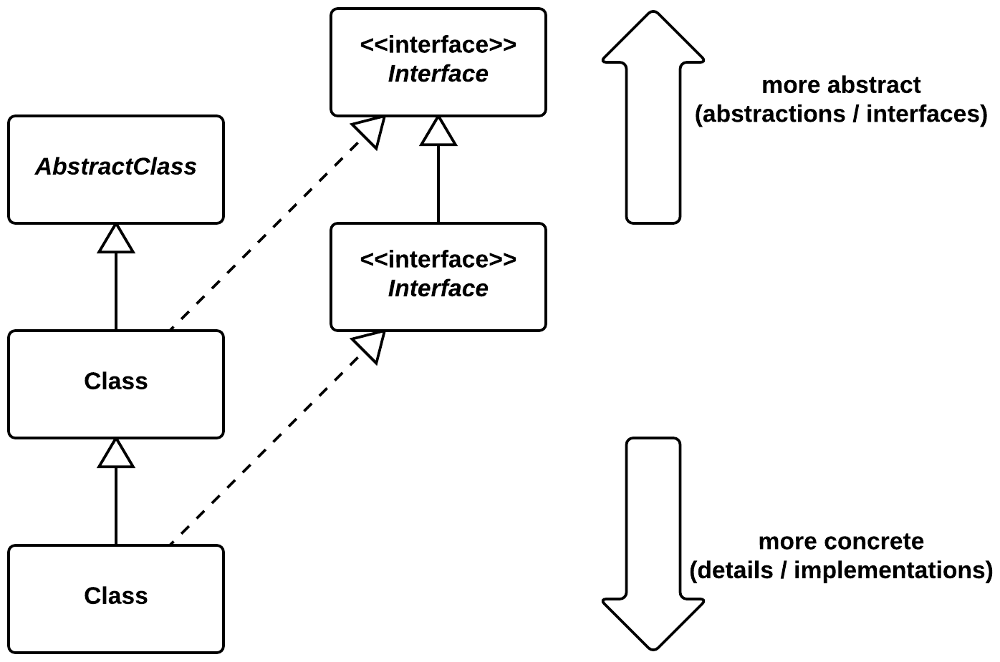

Dependency Injection
Don't call us, we'll call you
© We Can Code IT, LLC
Dependencies
A dependency is anything your code knows about. That could be another class, method, or interface. It could also be knowledge of how an object does something. We say that code with a lot of dependencies is tightly coupled, while code with minimal dependencies is loosely coupled.
Code that is polymorphic and exhibits good encapsulation (clean code) is loosely coupled.
What does that mean?
Consider the method below from BankingApp. What are its dependencies?
void printAccountBalances(PrintStream out) {
Collection<Account> accounts = new ArrayList<>();
accounts.add(new CheckingAccount());
accounts.add(new SavingsAccount());
accounts.add(new CreditAccount());
for(Account a: accounts) {
out.println("Balance is " + a.balance());
}
}
Let’s take them in order.
Method parameters
void printAccountBalances(PrintStream out) {Our method is dependent on java.io.PrintStream.
It is also dependent on its println(String) method:
out.println("Balance is " + a.balance());Local collection variables
Our method is dependent on Collection (and it being a parameterized type) and ArrayList (and its no-arg constructor):
Collection<Account> accounts = new ArrayList<>();It is also assumes that Collection isA (extends or implements) Iterable, to allow usage of the enhanced for loop:
for(Account a: accounts) {
Account
Our method depends on the existence of an Account type:
Collection<Account> accounts = new ArrayList<>();Also, that it has a balance method that returns a value whose toString() method returns a String appropriate for display purposes:
out.println("Balance is " + a.balance());Types of Accounts
Our method depends on their being three types of accounts, each of which isA Account: CheckingAccount, SavingsAccount, and CreditAccount. Also, that each has a default (no-argument) constructor:
Collection<Account> accounts = new ArrayList<>();
accounts.add(new CheckingAccount());
accounts.add(new SavingsAccount());
accounts.add(new CreditAccount());The (mostly) entire list
To sum up, it is dependent on the following:
Accountand itsbalance()methodCheckingAccountand its default (no-argument) constructorSavingsAccountand its default (no-argument) constructorCreditAccountand its default (no-argument) constructorjava.lang.Iterablejava.util.Collection<E>java.util.ArrayList<E>java.io.PrintStreamand itsprintln(String)method
Dependencies are things that could change and break our code. Tightly coupled code (a lot of dependencies) is fragile.
The collections classes and PrintStream are unlikely to change, so we’re a bit less worried about those dependencies
Dependency Injection
A family of techniques used to implement Inversion of Control. The simplest of these are constructor injection and direct instance variable injection (aka field injection). Setter injection is also oft-used, but usually a code smell.
Constructor-injection
Let’s return to BankingApp. It has a lot of dependencies. We could use constructor injection to pass control of Account creation outside of our app. If we were using a framework (like Spring), we would allow the framework to inject our dependencies.
First, we would give our app a constructor that accepts Accounts and an instance variable to store them:
private Collection<Account> accounts;
public BankingApp(Collection<Account> accounts) {
this.accounts = accounts;
}
Note that we have already eliminated the dependecy on ArrayList! We only know that we’re dealing with a Collection.
Our new improved method
void printAccountBalances(PrintStream out) {
for (Account a : accounts) {
out.println("Balance is " + a.balance());
}
}
Now we have eliminated the dependecy on specific Account types as well as how they are constructed. Our method no longer controls how accounts are created or which accounts are created.
Our leaner and meaner list of dependencies
We still have several of our stable dependencies on core Java classes. Our acceptance of dependencies should vary inversely with how likely they are to change:
java.lang.Iterablejava.util.Collection<E>java.io.PrintStreamand itsprintln(String)method
But our dependencies on application-specific classes have now been reduced to Account and its balance() method.
In our simple example, we still rely on balance() returning something with a toString() method that renders a suitable String for display. In the real world, we would create another class responsible for converting balance to a String, so we would eliminate this dependency as well.
Inversion of Control
Often expressed as the Hollywood Principle: “Don’t call us, we’ll call you.” (That links to Ward Cunningham’s WikiWikiWeb. Not only is it the first wiki on the web, but he invented wikis!)
When using a framework (such as Spring #foreshadowing), we tell a framework about our classes, then give control of how our classes are assembled and invoked to that framework. We don’t explicitly call the framework anymore; the framework calls us.
See Martin Fowler’s Inversion of Control Containers and the Dependency Injection pattern.
Dependency inversion principle
The dependency inversion principle is the culmination of these tools and techniques. From the lips of our beloved Uncle Bob:
A. High level modules should not depend upon low level modules. Both should depend upon abstractions.
B. Abstractions should not depend upon details. Details should depend upon abstractions.
Easier to say than do, to be sure!
Program to interfaces, not implementations

SOLID
SOLID is an acronym introduced by Michael Feathers and promoted by Uncle Bob.
Dependency inversion is the D in SOLID.
SOLID is a mnemonic for a set of principles that represent an agile, clean object oriented development philosophy:
- Single responsibility principle
- Open/closed principle
- Liskov substitution principle
- Interface segregation principle
- Dependency inversion principle
Remember, be agile or be fragile.